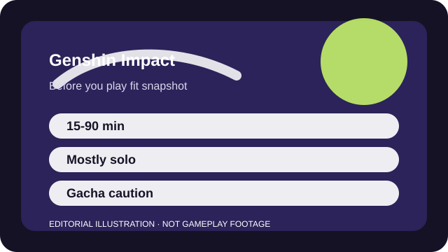

BEFORE YOU PLAY
What this page is and is not
This is a sourced editorial fit profile. It is designed to help with a yes-or-no play decision, and it does not claim a scored hands-on review.
The game is easiest to judge after a few regions of exploration, not after the opening cutscenes alone. If wandering, collecting, and building a small roster sounds inviting, it can become a dependable routine game.
The first-session loop to judge is simple: Explore, complete quests, build a small team around elemental reactions, and gradually strengthen characters through resource farming.
Story, exploration, resin-spending, and character ascension drive the long-term pace more than a traditional endgame ladder.

FIT SNAPSHOT
Genshin Impact at a glance
| Genre | Open-world action RPG |
|---|---|
| Platforms | PC, PlayStation, Xbox, Mobile |
| Business model | Free-to-play open-world RPG with gacha monetization and regular live updates. |
| Typical session | 15-90 minutes depending on whether you are exploring, questing, or doing dailies. |
| Play style | solo exploration with live-service systems |
| Learning barrier | Genshin is easy to begin and becomes more layered once elemental reactions, resin, and team composition begin to matter. |
| Social shape | The game is primarily solo-friendly, with optional co-op rather than required scheduling. |
WHO IT FITS
Best fit, likely friction, and the social reality
players who want a solo-first exploration game with live updates and character-building goals
anyone who dislikes gacha systems or mainly wants competitive multiplayer
The game is primarily solo-friendly, with optional co-op rather than required scheduling.
Story, exploration, resin-spending, and character ascension drive the long-term pace more than a traditional endgame ladder.
FIRST SESSION PLAN
How to test the fit in one evening
- Play through the early regions long enough to judge whether exploration itself is satisfying.
- Test a few free or early characters before thinking about banners or optimal teams.
- Spend resin only on obvious early progression needs instead of chasing perfect efficiency.
- Leave the wish menu alone until you know whether you enjoy the world without paid pulls.
Use the first session to answer these fit questions instead of judging rank, win rate, or store value immediately.
- Do you want exploration and atmosphere more than competitive challenge?
- Can you ignore limited banners without feeling constant fear of missing out?
- Are you comfortable with story pacing that stretches between major updates?
TIME, COST, AND COMMITMENT
What you are really signing up for
| Session budget | 15-90 minutes depending on whether you are exploring, questing, or doing dailies. |
|---|---|
| Social demand | The game is primarily solo-friendly, with optional co-op rather than required scheduling. |
| Progression shape | Story, exploration, resin-spending, and character ascension drive the long-term pace more than a traditional endgame ladder. |
| Spending pressure | The adventure is free to start, but wish banners reward strict budget discipline if you are vulnerable to limited-character hype. |
You can enjoy Genshin in short daily bursts or longer story blocks, but deeper optimization introduces ongoing calendar friction.
The adventure is free to start, but wish banners reward strict budget discipline if you are vulnerable to limited-character hype.
SOURCES AND LIMITS
What was checked, and what can change
- Character banners and limited events rotate continuously.
- Cross-save or login rules can differ by platform and account history.
- Resin advice and farming priorities change when new regions or systems arrive.
This profile uses official game pages and defensible general product knowledge to frame the player fit. It does not claim live testing across every platform, accessibility need, or current event rotation.